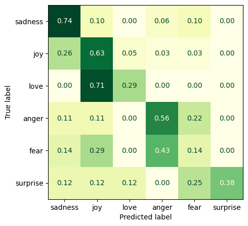

Code
import openai
import tiktoken
import getpass
import numpy as np
import matplotlib.pyplot as plt
from sklearn.metrics import ConfusionMatrixDisplay, confusion_matrix
from datasets import load_dataset
from functools import partialMarch 12, 2023
After we took a quick look at the ChatGPT API and some example use cases in the last post, let’s dive a little bit deeper and see how we can use ChatGPT for zero-shot sentiment analysis.
Enter the OpenAI API Key:··········As our example we’ll use the emotion dataset that is available from the HuggingFace hub:
The dataset contains tweets which have been labelled with one of six emotions: anger, disgust, fear, joy, sadness, and surprise.
| text | label | label_str | |
|---|---|---|---|
| 0 | i didnt feel humiliated | 0 | sadness |
| 1 | i can go from feeling so hopeless to so damned... | 0 | sadness |
| 2 | im grabbing a minute to post i feel greedy wrong | 3 | anger |
| 3 | i am ever feeling nostalgic about the fireplac... | 2 | love |
| 4 | i am feeling grouchy | 3 | anger |
| ... | ... | ... | ... |
| 15995 | i just had a very brief time in the beanbag an... | 0 | sadness |
| 15996 | i am now turning and i feel pathetic that i am... | 0 | sadness |
| 15997 | i feel strong and good overall | 1 | joy |
| 15998 | i feel like this was such a rude comment and i... | 3 | anger |
| 15999 | i know a lot but i feel so stupid because i ca... | 0 | sadness |
16000 rows × 3 columns
Let’s have a look at one full example per emotion:
anger: im grabbing a minute to post i feel greedy wrong
fear: i feel as confused about life as a teenager or as jaded as a year old man
joy: i have been with petronas for years i feel that petronas has performed well and made a huge profit
love: i am ever feeling nostalgic about the fireplace i will know that it is still on the property
sadness: i didnt feel humiliated
surprise: ive been taking or milligrams or times recommended amount and ive fallen asleep a lot faster but i also feel like so funnyAs it turns out, the labels are not always entirely obvious. In a real-world dataset that has been labeled by human annotators this is to be expected, of course, but it will make things hard for a few-shot classifier.
Note that we are also dealing with class imbalance. For example, tweets that express joy are ten times more common in the dataset than tweets expressing surprise.
We can tweak multiple parameters to prime ChatGPT for our use case; the most important one unquestionably being the system prompt. Let’s try the following:
To ensure that ChatGPT only replies with one of the given emotions, we can modify the likelihood of specific tokens appearing in the model’s answer using the API’s logit_bias parameter. As per the API reference, we can map token IDs to bias values ranging from -100 to 100 (where -100 results in the ban of a given token and 100 leads to its exclusive selection). The bias values will be added to the logits generated by the model prior to sampling.
Let’s create a dictionary of biases for our purpose. We’ll use OpenAI’s tiktoken package to encode the emotions in our list. Since tiktoken is a subword tokenizer, one emotion can map to multiple token IDs:
joy: [4215]
love: [31153]
fear: [69, 686]
anger: [4091]
sadness: [83214, 2136]
surprise: [20370, 9868]
end token: [13]Let’s try a bias value of 10 for each token ID. To ensure that the model always picks the token with the highest logit, we’ll set the temperature to 0.0.
Finally, we can use the max_tokens parameter as well as the stop parameter to further constrain the model:
max_tokens to 3 meaning that ChatGPT will never reply with more tokens.stop to "." so that the model never generates any more tokens after replying with ".".Since we want to do few-shot sentiment analysis, we’ll provide five examples per category to the model. To do this, we’ll provide the tweet using the user role and the correct answer using the assistant role that is available in the API.
train_examples = df.groupby("label_str")[["text", "label_str"]].sample(5, random_state=1).reset_index(drop=True)
train_examples = train_examples.iloc[rng.permuted(np.arange(train_examples.shape[0]))]
train_examples = dict(zip(train_examples.text, train_examples.label_str))
fewshot = []
for tweet, emotion in train_examples.items():
fewshot.append({"role": "user", "content": tweet})
fewshot.append({"role": "assistant", "content": emotion + "."})
fewshot[:4][{'role': 'user',
'content': 'i always feel awkward when im alone in a crowd of peers and feel the need to make friends'},
{'role': 'assistant', 'content': 'sadness.'},
{'role': 'user',
'content': 'i have a feeling i took so much time but kuya buddy and kuya angee have been very supportive all the way'},
{'role': 'assistant', 'content': 'love.'}]Finally, we’ll wrap the entire thing in a simple function:
def get_sentiment(example, system_prompt, fewshot_examples, emotions, end_token, bias_value=10):
biases = create_biases(emotions + [end_token], bias_value)
completion = openai.ChatCompletion.create(
model="gpt-3.5-turbo",
messages=[
{"role": "system", "content": system_prompt},
*fewshot_examples,
{"role": "user", "content": example}
],
temperature=0.0,
max_tokens=3,
stop=end_token,
logit_bias=biases
)
sentiment = completion["choices"][0]["message"]["content"]
return sentimentNow let’s try this for the first tweet in the category “joy” that we’ve seen earlier:
'joy'This actually works! But how well? To find out we’ll use a random subset of 100 rows from the dataset’s predefined test set:
| text | label | label_str | chatgpt_pred_str | |
|---|---|---|---|---|
| 674 | i want to feel assured that my life will be go... | 1 | joy | joy |
| 1699 | i hear someone say we should just let gardener... | 3 | anger | anger |
| 1282 | im always feeling so agitated overly excited a... | 3 | anger | anger |
| 1315 | i guess it comes from believing that when i wa... | 1 | joy | sadness |
| 1210 | i feel like this beats out just about any popu... | 1 | joy | joy |
| 1636 | i feel like we re getting a terrific recruiter... | 1 | joy | joy |
| 613 | i feel curious because i would like to explore... | 5 | surprise | surprise |
| 447 | i did not know this i could not look out upon ... | 0 | sadness | sadness |
| 1131 | i feel terrible when i hurt peoples feelings w... | 0 | sadness | sadness |
| 808 | i can t say for certain why but it actually ma... | 1 | joy | surprise |
| 1496 | i feel they are frightened of fats | 4 | fear | anger |
| 1468 | im feeling optimistic to finish out these last... | 1 | joy | joy |
| 1682 | i think im making up for feeling like i missed... | 0 | sadness | joy |
| 1149 | i feel so greedy so needy so helpless | 3 | anger | sadness |
| 442 | i had to continue to enforce my no playdate po... | 3 | anger | anger |
| 1813 | im feeling exponentially more useless on the f... | 0 | sadness | sadness |
| 654 | i met my present boyfriend on a boat trip to e... | 1 | joy | love |
| 1264 | i feel it is acceptable as this is not everyda... | 1 | joy | joy |
| 858 | i feel like i just doomed myself | 0 | sadness | fear |
| 1482 | i feel that they ignored the systemic nature o... | 0 | sadness | anger |
As we can see in the confusion matrix, the results are mixed. Given the few-shot setting and the sometimes debatable labels, ChatGPT probably still performed quite well. After all, it can be quite hard to draw a distinction between classes like joy and love or anger and fear. Nonetheless, finetuning a dedicated model for this task (e.g., a small model of the DeBERTa family) would have yielded much better results.
fig, ax = plt.subplots(figsize=(5, 5))
cm = confusion_matrix(test_df.chatgpt_pred_str.map(label_str2int), test_df.label_str.map(label_str2int), normalize="true")
disp = ConfusionMatrixDisplay(confusion_matrix=cm, display_labels=label_int2str.values())
disp.plot(cmap="YlGn", values_format=".2f", ax=ax, colorbar=False);